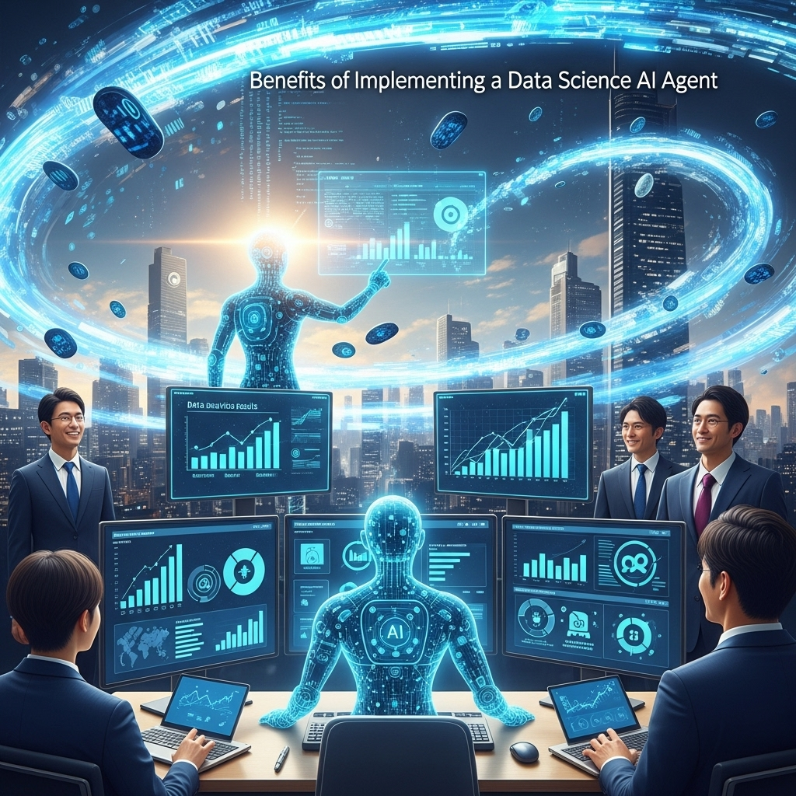

データサイエンスとAIエージェントが拓く未来！業務効率化とビジネス成長の秘訣
導入
現代のビジネスシーンにおいて、「データは21世紀の石油である」という言葉を耳にする機会がますます増えてきました。日々生成される膨大なデータをいかに活用し、ビジネス上の意思決定や新たな価値創造に繋げるか。この問いは、業界や企業の規模を問わず、すべての組織にとって避けては通れない重要なテーマとなっています。そして、このデータという広大な海を航海する羅針盤となるのが、「データサイエンス」という学問であり、その専門家である「データサイエンティスト」の存在です。
彼らは、統計学、情報工学、そしてビジネス知識を駆使して、混沌としたデータの中から価値ある「洞察（インサイト）」を見つけ出し、企業の成長を力強く後押しします。しかしその一方で、データサイエンティストたちが直面している現実は、決して華やかなものばかりではありません。
データの海はあまりにも広く、そして深く、航海には多くの困難が伴います。目的のデータを探し出し、収集するだけでも一苦労。集めたデータも、そのままでは分析に使えないことがほとんどです。ノイズを取り除き、欠けている部分を補い、分析しやすい形に整える「データ前処理」と呼ばれる作業には、プロジェクト全体の時間の実に8割が費やされるとも言われています。その後も、最適な分析モデルの構築、精度の検証、そしてビジネスサイドに伝わる形でのレポート作成と、タスクは山積みです。
優秀なデータサイエンティストであっても、これらの反復的で時間のかかる作業に忙殺され、本来最も価値を発揮すべき「データから未来を読み解き、戦略を立案する」という創造的な思考に十分な時間を割けていない、というジレンマを抱えているのが実情ではないでしょうか。
もし、こうした一連の定型的な作業を、まるで優秀なアシスタントのように自律的にこなしてくれる存在がいたらどうでしょう？ データサイエンティストが「このデータから、来月の売上を予測するためのモデルを作って」と指示するだけで、データの収集から最適なモデルの提案までを自動で行ってくれる。そんな夢のような話が、今、現実のものとなりつつあります。
その鍵を握るのが、本記事の主役である「AIエージェント」です。
近年、ChatGPTをはじめとする大規模言語モデル（LLM）の驚異的な進化は、私たちの社会に大きなインパクトを与えました。AIエージェントは、このLLMを「頭脳」として搭載し、与えられた目標を達成するために、自ら計画を立て、必要なツールを使いこなし、試行錯誤を繰り返しながらタスクを遂行する、次世代のAI技術です。
この記事では、データサイエンスの世界に革命をもたらす可能性を秘めた「AIエージェント」に焦点を当て、その基本概念から具体的な活用事例、導入のメリット・デメリット、さらにはAIエージェントと共存する未来のデータサイエンティストの姿まで、深く、そして分かりやすく解き明かしていきます。
データ活用に課題を感じているビジネスパーソンの方、日々の業務の効率化に悩むデータサイエンティストの方、そしてAIが拓く未来に興味を持つすべての方にとって、この記事が新たな可能性の扉を開く一助となれば幸いです。さあ、一緒にデータサイエンスとAIエージェントが織りなす未来への旅を始めましょう。
AIエージェントとは？データサイエンス分野への注目背景
AIエージェントという言葉が、にわかに注目を集めています。まるでSF映画の世界から飛び出してきたかのようなこの技術は、私たちの働き方、そしてデータとの向き合い方を根底から変えようとしています。この章では、まずAIエージェントとは一体何なのか、その基本的な概念と仕組みを優しく解きほぐし、なぜ今、データサイエンスの分野でこれほどまでに熱い視線が注がれているのか、その背景に迫っていきます。
AIエージェントの基本概念と仕組み
AIエージェントをひと言で表現するならば、「自律的に思考し、行動する賢い代理人（エージェント）」と言えるでしょう。これまでのAI、例えば画像認識AIや翻訳AIが、特定のタスクをこなす「専門ツール」であったとすれば、AIエージェントは、より汎用的な目標を与えられると、その達成のために自ら計画を立て、複数のツールを組み合わせて実行する「プロジェクトマネージャー」や「アシスタント」に近い存在です。
この自律的な行動を支えているのが、AIエージェントの基本的な動作サイクルです。専門的には「知覚（Perception）」「推論・計画（Reasoning/Planning）」「行動（Action）」のループと呼ばれています。
- 知覚 (Perception): まず、エージェントは自身の置かれた状況や外部環境を「知覚」します。これは、ユーザーからの指示（例：「最新の市場トレンドを調査して」）を受け取ったり、アクセス可能なデータソース（データベース、ウェブサイトなど）の状態を読み取ったりすることに相当します。
- 推論・計画 (Reasoning/Planning): 次に、知覚した情報と与えられた最終目標を基に、「何をすべきか」を考えます。この思考プロセスこそが、AIエージェントの心臓部であり、近年の大規模言語モデル（LLM）がその役割を担っています。LLMは、その卓越した言語理解能力と推論能力を活かして、目標達成までのステップを細かく分解し、具体的な行動計画を立案します。「市場トレンドを調査するには、まず関連キーワードでニュースサイトを検索し、次に業界レポートを探し、最後に得られた情報を要約しよう」といった具合です。
- 行動 (Action): 計画が決まれば、次はその計画を実行に移します。ここがAIエージェントのもう一つの重要な特徴です。彼らは、ただ考えるだけでなく、実際に「ツール」を使って行動することができます。このツールには、ウェブ検索を行うためのブラウザ操作、データを分析するためのPythonコードの実行、社内データベースに問い合わせるためのAPI呼び出しなど、様々なものが含まれます。
- フィードバックと再計画: 行動の結果（ウェブ検索の結果、コードの実行エラーなど）は、再び「知覚」され、エージェントの思考プロセスにフィードバックされます。もし計画通りに進まなければ、「別のキーワードで検索し直そう」「コードのエラーを修正しよう」といったように、自ら計画を修正し、目標達成までこのサイクルを粘り強く繰り返します。
このように、AIエージェントは「知覚→思考→行動」のサイクルを自律的に回し続けることで、人間が介在せずとも複雑なタスクを遂行することができるのです。まるで、経験豊富なアシスタントが、曖昧な指示から意図を汲み取り、自分で調べ、考え、作業を進めてくれるようなイメージです。
データサイエンスにおけるAIエージェントの重要性
では、このAIエージェントという存在が、なぜデータサイエンスの分野でこれほどまでに重要視されているのでしょうか。その理由は、データサイエンスのワークフローが持つ特性と、AIエージェントの能力が見事に合致する点にあります。
一般的なデータ分析プロジェクトは、以下のような一連のステップで構成されています。
- 課題設定: ビジネス上の課題を特定し、それをデータで解決可能な問いに落とし込む。
- データ収集: 必要なデータを様々なソース（データベース、API、ウェブなど）から集める。
- データ前処理: 収集したデータをクレンジングし、分析可能な形式に整形する（欠損値処理、外れ値除去、正規化など）。
- 探索的データ分析 (EDA): データの特徴を可視化し、パターンや相関関係を探る。
- モデル構築: 機械学習モデルなどを構築し、予測や分類を行う。
- モデル評価: 構築したモデルの精度や性能を評価する。
- デプロイ・運用: 完成したモデルを実システムに組み込み、運用する。
- レポーティング・示唆提供: 分析結果やモデルから得られた洞察を、ビジネスサイドに分かりやすく伝え、意思決定を支援する。
この中で、特にステップ2から6にかけての工程は、高度な専門知識を要する一方で、非常に多くの試行錯誤と反復作業を伴います。どのデータをどう加工するか、どのモデルをどのパラメータで試すか、その組み合わせは無限に存在し、データサイエンティストは膨大な時間をかけて最適な解を探し求めます。
ここにAIエージェントが登場すると、物語は大きく変わります。
- データ収集・前処理の自動化: 「A社の売上データと、関連する市場ニュースを収集し、分析できる形に整えて」という指示で、AIエージェントがAPIを叩き、ウェブをクロールし、データのクリーニングまでを自動で実行します。
- モデル構築・評価の自律化: 「このデータを使って、顧客の離反予測モデルを精度高く作って」と依頼すれば、AIエージェントが複数のアルゴリズムを試し、ハイパーパラメータを調整し、最も性能の良いモデルを報告してくれます。
- 洞察発見の支援: 「分析結果から、売上向上のために最も重要な要素を3つ教えて」と尋ねれば、AIエージェントが結果を解釈し、平易な言葉で要点をまとめてくれます。
つまり、AIエージェントは、データサイエンティストを時間のかかる定型作業や試行錯誤から解放し、彼らが本来集中すべき、より上流の「ビジネス課題の発見・定義」や、下流の「分析結果からビジネス価値を生み出す戦略立案」といった、より創造的で付加価値の高い業務に専念させてくれる、まさに理想的なパートナーとなり得るのです。
なぜ今、データサイエンティストが注目すべきなのか
AIエージェントという概念自体は、実は古くから存在していました。しかし、それが今、現実的な技術として急速に普及し始めているのには、いくつかの決定的な理由があります。データサイエンティストがこの潮流を見過ごすべきではない理由は、ここに集約されています。
第一に、大規模言語モデル（LLM）の飛躍的な進化です。前述の通り、LLMはAIエージェントの「頭脳」です。近年のGPT-4やClaude 3、Geminiといったモデルは、人間と遜色ないレベルの言語理解力、論理的推論能力、そしてプログラミング能力を獲得しました。これにより、「何をすべきか」を高度に計画し、それを実行するためのコードを自ら生成する能力が格段に向上し、実用的なAIエージェントの構築が可能になったのです。
第二に、コンピューティングパワーの向上とコストの低下です。LLMやAIエージェントを動かすには膨大な計算リソースが必要ですが、クラウドコンピューティングの発展により、誰でも比較的安価に高性能な計算環境を利用できるようになりました。これにより、大企業だけでなく、スタートアップや個人開発者でもAIエージェントの開発・活用に乗り出せる土壌が整いました。
第三に、オープンソースのフレームワークやツールの充実です。LangChainやLlamaIndexといったライブラリが登場したことで、開発者は複雑なAIエージェントのロジックをゼロから構築する必要がなくなり、既存のコンポーネントを組み合わせることで、比較的容易に独自のAIエージェントを開発できるようになりました。これにより、技術革新のスピードが加速しています。
そして最後に、ビジネス環境の変化です。DX（デジタルトランスフォーメーション）の波が加速し、あらゆる企業がデータに基づいた迅速な意思決定を迫られています。市場の競争は激化し、データ活用のスピードと質が、企業の競争力を直接左右する時代になりました。このような状況下で、データ分析プロセスを劇的に効率化・高度化できるAIエージェントは、もはや「あれば便利なツール」ではなく、「競争に勝ち抜くための必須技術」となりつつあるのです。
データサイエンティストにとって、AIエージェントは自らの仕事を奪う脅威ではありません。むしろ、自身の能力を何倍にも増幅させてくれる、強力な「知の増幅器」です。この新しい波に乗り遅れることなく、AIエージェントを使いこなし、彼らと協働するスキルを身につけること。それが、これからの時代を生き抜くデータサイエンティストにとって、極めて重要なテーマとなっているのです。
データサイエンスAIエージェントの具体的な活用事例
AIエージェントがデータサイエンスのワークフローを革新する可能性について触れましたが、ここではさらに一歩踏み込み、具体的にどのような場面で、どのように活用できるのかを、より詳細な事例と共に見ていきましょう。まるで優秀な後輩やアシスタントが隣にいるかのように、AIエージェントがデータサイエンティストの業務をサポートする未来の姿を想像してみてください。
データ収集・前処理プロセスの自動化
データ分析プロジェクトにおいて、最も地道で、しかし最も重要な工程がデータ収集と前処理です。この工程の品質が、最終的な分析結果の質を大きく左右します。AIエージェントは、この時間のかかるプロセスを劇的に効率化する能力を秘めています。
シナリオ1：多様なソースからのデータ自動収集
あるECサイトのデータサイエンティストが、「競合他社の新製品の価格動向と、SNSでの評判を調査し、自社の価格戦略に活かしたい」と考えたとします。
- 従来の方法: データサイエンティストは、まず競合サイトの製品ページを一つ一つ確認し、価格を手作業でリストアップします。次に、SNSで製品名を検索し、関連する投稿を目で追いながら、ポジティブな意見とネガティブな意見を分類・集計します。この作業には、数時間から数日を要することもあるでしょう。
- AIエージェントの活用: データサイエンティストは、AIエージェントにこう指示します。「競合A社、B社、C社のウェブサイトから、特定カテゴリの新製品名と価格を毎日自動で収集して。同時に、SNSからこれらの製品名に関する投稿を取得し、その内容がポジティブかネガティブかを判定して、すべてを一つのデータベースにまとめておいて。」
- AIエージェントは、この指示を理解し、行動計画を立てます。
- ウェブスクレイピングツールを起動し、指定された競合サイトの構造を解析。製品名と価格が記載されているHTMLタグを特定し、定期的に情報を抽出するスクリプトを自動生成します。
- SNSのAPIにアクセスし、キーワード（製品名）で投稿を検索するプログラムを実行します。
- 取得したSNSの投稿テキストを、自身の頭脳であるLLMに渡し、「この文章は製品に対して肯定的ですか、否定的ですか？」と問いかけ、感情分析を行います。
- 収集した価格データと感情分析の結果を、指定されたデータベースのテーブルに綺麗に整形して格納します。
- この一連のプロセスをAIエージェントが自律的に実行することで、データサイエンティストは、毎日更新される整理済みのデータを手に入れることができ、すぐに分析に取り掛かることができます。
- AIエージェントは、この指示を理解し、行動計画を立てます。
シナリオ2：煩雑なデータクレンジングの自動化
次に、収集したデータには欠損値（空欄）や外れ値（異常に大きい、または小さい値）、表記の揺れ（例：「株式会社A」と「(株)A」）などがつきものです。
- 従来の方法: データサイエンティストは、各列のデータ分布を可視化し、統計的な手法（平均値で補完、中央値で補完など）やビジネス的な知見に基づいて、欠損値や外れ値の処理方法を一つ一つ決定し、コードを書いて実行します。
- AIエージェントの活用: データサイエンティストは、データファイルをAIエージェントに渡し、こう指示します。「この顧客データの品質をチェックして、前処理をお願い。特に、年齢の欠損は同じ年代層の平均値で補完し、年収の極端な外れ値は除外して。住所の表記も統一してください。」
- AIエージェントは、まずデータの各列の基本統計量（平均、標準偏差、欠損数など）を自動で計算し、サマリーを提示します。
- 指示に基づき、年齢の欠損値を補完し、統計的に外れ値と判断される年収データを除外するコードを生成・実行します。
- 住所の表記揺れについては、LLMの知識を活用して正規化（例：「東京都千代田区1-1-1」に統一）を行います。
- 処理の前後でデータがどのように変化したかを可視化し、実行した処理内容のログと共に報告します。これにより、データサイエンティストは処理の妥当性を確認し、必要に応じて微調整の指示を出すだけで済みます。
モデル構築・評価プロセスの効率化
データの前処理が完了すると、次はいよいよ機械学習モデルの構築です。しかし、これもまた試行錯誤の連続です。どのアルゴリズムを選ぶか、そのアルゴリズムのパラメータ（ハイパーパラメータ）をどう設定するかによって、モデルの性能は大きく変わります。
シナリオ：最適な予測モデルの自律的探索
ある金融機関で、顧客がローンを返済するかどうかを予測するモデルを開発するタスクを考えます。
- 従来の方法: データサイエンティストは、自身の経験と知識に基づき、ロジスティック回帰、決定木、ランダムフォレスト、勾配ブースティングなど、いくつかの候補となるアルゴリズムを選びます。そして、それぞれのアルゴリズムについて、ハイパーパラメータの組み合わせを複数パターン試し（グリッドサーチなど）、最も性能の良いモデルを見つけ出します。このプロセスは非常に計算コストが高く、時間がかかります。
- AIエージェントの活用: データサイエンティストは、前処理済みのデータをAIエージェントに渡し、こう指示します。「このデータを使って、ローンのデフォルト（債務不履行）を予測する最も精度の高いモデルを構築してください。AUC（評価指標の一種）を最大化することを目標とし、最終的に選ばれたモデルの性能と、そのモデルがどの特徴量を重要視しているかを報告してください。」
- AIエージェントは、AutoML（自動機械学習）の考え方を拡張し、自律的にモデル構築プロセスを進めます。
- まず、タスクの種類（この場合は二値分類）を認識し、適切なモデル候補（ロジスティック回帰、SVM、XGBoostなど）を自動でリストアップします。
- それぞれのモデルについて、ベイズ最適化などの効率的な手法を用いて、最適なハイパーパラメータを探索します。
- 交差検証（Cross-Validation）を行い、各モデルの汎化性能を公平に評価します。
- すべての試行結果を記録し、AUCが最も高かったモデルを最終候補として選出します。
- 選出されたモデルについて、SHAPやLIMEといったXAI（説明可能なAI）の手法を用いて、どの特徴量（年収、勤続年数、過去の延滞履歴など）が予測に強く影響しているかを分析し、解釈しやすい形で可視化・報告します。
- データサイエンティストは、AIエージェントが探索した結果をレビューするだけで、人間が手作業で行うよりも遥かに網羅的かつ効率的に、高性能なモデルとその根拠を得ることができます。
- AIエージェントは、AutoML（自動機械学習）の考え方を拡張し、自律的にモデル構築プロセスを進めます。
洞察発見とレポート作成支援の高度化
分析やモデル構築が終わっても、データサイエンティストの仕事は終わりではありません。その結果をビジネスサイドのメンバーに分かりやすく伝え、具体的なアクションに繋げることが極めて重要です。
シナリオ：分析結果の自動要約と対話型レポーティング
マーケティング部門から、「最近のキャンペーンの効果を分析して、次の施策のヒントが欲しい」という依頼が来たとします。
- 従来の方法: データサイエンティストは、キャンペーン接触者と非接触者の購買率の差を計算し、様々な角度からデータを集計・可視化（グラフ作成）します。そして、PowerPointなどのツールを使い、分析の背景、手法、結果、そして考察をまとめた数十ページに及ぶレポートを作成します。
- AIエージェントの活用: データサイエンティストが分析を実行した後、その結果（グラフや集計表のデータ）をAIエージェントに渡します。「このキャンペーン分析の結果を、マーケティング部長向けに要約して。重要なポイントを3つに絞り、専門用語を使わずに分かりやすい言葉で説明し、推奨される次のアクションを提案してください。」
- AIエージェントは、LLMの要約能力を最大限に活用します。
- 入力された複数のグラフや数値を解釈し、最もインパクトの大きい発見（例：「20代女性セグメントでの購買率が特に5%向上している」）を自動で特定します。
- 「今回のキャンペーンのポイントは3つです。第一に…」といった形で、ビジネス向けの構成でサマリーを生成します。
- 「この結果から、次回のキャンペーンでは20代女性をメインターゲットにしたクリエイティブを強化することが効果的と考えられます」といった、具体的なアクションプランまで提案します。
- さらに、このAIエージェントをチャットボットとして組み込むことで、対話型のレポーティングが実現します。マーケティング部長は、レポートを読んで生じた疑問を、直接AIエージェントに自然言語で質問できます。「20代女性の中でも、特にどの地域の反応が良かったの？」と尋ねれば、AIエージェントが即座に追加のデータ集計を実行し、「東京都と神奈川県で特に高い効果が見られました」とグラフ付きで回答してくれます。これにより、分析のサイクルが高速化し、データとビジネスの距離がぐっと縮まります。
- AIエージェントは、LLMの要約能力を最大限に活用します。
LLMを活用した高度な分析支援（RAG, ReActなど）
ここまでの事例は、AIエージェントの基本的な能力を示すものでしたが、その真価は、LLMの最新技術と組み合わせることでさらに発揮されます。特に注目されているのが、「RAG」と「ReAct」という二つのアプローチです。
RAG (Retrieval-Augmented Generation) の活用
RAGは、「検索拡張生成」と訳され、LLMが回答を生成する際に、外部の信頼できる情報源（社内文書、データベース、専門知識ベースなど）をリアルタイムで参照する技術です。これにより、LLMの弱点であるハルシネーション（事実に基づかない情報を生成してしまうこと）を抑制し、根拠に基づいた正確な回答が可能になります。
- データ分析への応用:
- 社内データに関する質問応答システム: データサイエンティストが、「うちの会社のデータウェアハウスにある『sales_daily』テーブルの定義を教えて。特に『is_promo』というカラムは何を意味する？」とAIエージェントに質問します。
- AIエージェントは、RAGの仕組みを使って、社内のデータカタログ（各テーブルやカラムの定義が書かれた文書）を検索し、「『is_promo』カラムは、その売上がプロモーション対象商品によるものかどうかを示すフラグで、1が対象、0が対象外を意味します」と、正確な情報源に基づいて回答します。これにより、データを探したり、他の担当者に聞いたりする手間が省けます。
ReAct (Reasoning and Acting) の活用
ReActは、「推論と行動」を組み合わせるフレームワークで、AIエージェントがより複雑なタスクを解決するための思考プロセスを模倣します。LLMが「思考（Thought）」「行動（Action）」「観察（Observation）」というステップを繰り返すのが特徴です。
- データ分析への応用:
- 曖昧な依頼からの自律的分析実行: ビジネスユーザーがAIエージェントに「最近、なぜか売上が落ちている気がする。原因を調べてくれないか？」という非常に曖昧な依頼をします。
- AIエージェントは、ReActのフレームワークに従ってタスクを進めます。
- 思考 (Thought): 「売上減少の原因を調べるには、まず全体の売上トレンドを時系列で可視化する必要がある。その後、もし減少が確認できたら、商品カテゴリ別、地域別、顧客セグメント別など、様々な切り口でドリルダウンして、どの部分が特に落ち込んでいるのかを特定しよう。」
- 行動 (Action): Pythonのデータ分析ライブラリ（pandas, matplotlib）を使い、売上データを読み込んで月次の売上推移グラフを生成するコードを実行する。
- 観察 (Observation): 生成されたグラフを見て、「確かに直近3ヶ月で売上が減少傾向にある」ことを確認する。
- 思考 (Thought): 「次に、商品カテゴリ別の売上構成比を見てみよう。もしかしたら、主力商品の売上が落ちているのかもしれない。」
- 行動 (Action): 商品カテゴリ別にデータを集計し、円グラフを作成するコードを実行する。
- 観察 (Observation): …
- このように、AIエージェントは自ら仮説を立て、それを検証するための行動（データ分析）を行い、その結果を見て次の仮説を立てる…という、まさにデータサイエンティストが行う思考のループを自律的に実行し、最終的に「主力商品である『カテゴリA』の売上減少が、全体の売上低下の主因である可能性が高いです。特に、関東エリアでの落ち込みが顕著です」といった結論を導き出します。
企業における導入事例と成功の秘訣
すでに国内外の先進的な企業では、データサイエンス分野におけるAIエージェントの導入が始まっています。
例えば、ある大手製造業では、工場内のセンサーから収集される膨大な時系列データを監視するAIエージェントを開発しました。このエージェントは、常にデータのパターンを学習し、設備の異常や故障の兆候を早期に検知すると、自律的に担当者へアラートを送信し、関連する過去の故障データやメンテナンス記録をまとめたレポートを自動生成します。これにより、予知保全の精度が向上し、ダウンタイムの大幅な削減に成功しました。
また、ある金融サービス企業では、顧客からの問い合わせログや取引データを分析するAIエージェントを導入。このエージェントは、新たな不正利用のパターンや、顧客が不満を抱えているサービスの兆候を自律的に発見し、リスク管理部門やサービス改善チームに報告します。人間では見逃しがちな微細な変化を捉えることで、プロアクティブな対策を可能にしています。
これらの成功事例に共通する秘訣は、以下の3点に集約されます。
- スモールスタート: 最初から全社的な大規模システムを目指すのではなく、まずは特定の部署の、特定の課題（例：レポート作成の自動化）に絞って導入し、小さな成功体験を積み重ねることが重要です。
- 明確な目標設定: 「業務を効率化する」といった曖昧な目標ではなく、「週次レポートの作成時間を80%削減する」「モデルの予測精度を5%向上させる」など、定量的で測定可能なKPI（重要業績評価指標）を設定することが、導入効果を正しく評価し、次のステップに繋げるために不可欠です。
- 現場との密な連携: AIエージェントは万能ではありません。その能力を最大限に引き出すには、現場のデータサイエンティストやビジネスユーザーのドメイン知識（業務知識）が不可欠です。「どのような作業に時間がかかっているか」「どのような情報が意思決定に役立つか」といった現場の声を丁寧にヒアリングし、それをAIエージェントの設計に反映させることが、真に役立つシステムを作るための鍵となります。
これらの事例が示すように、AIエージェントはもはや未来の技術ではなく、ビジネスの現場で具体的な価値を生み出し始めているのです。
データサイエンスAIエージェント導入のメリット

AIエージェントをデータサイエンスの現場に導入することは、単なるツールの導入に留まらず、組織全体のデータ活用能力を飛躍的に向上させるポテンシャルを秘めています。そのメリットは多岐にわたりますが、ここでは特に重要な3つの側面に焦点を当てて、詳しく解説していきます。
メリット１．データ分析業務の劇的な効率化を実現
データサイエンティストの日常は、華やかなモデル開発やインサイト発見の時間よりも、地道な準備作業に多くの時間を費やされているのが現実です。AIエージェント導入による最大のメリットは、この構造を根本から変え、業務の劇的な効率化を実現できる点にあります。
反復作業からの解放と時間創出
前章の活用事例でも触れたように、データサイエンスのワークフローには、自動化に適した反復的・定型的なタスクが数多く存在します。
- データ収集・前処理: 複数のデータベースからのデータ抽出、Webサイトからのスクレイピング、API経由でのデータ取得といった作業は、一度ルールを決めてしまえば、あとは定期的に実行するだけのものがほとんどです。AIエージェントはこれらのタスクを24時間365日、文句ひとつ言わずに実行し続けてくれます。また、欠損値の補完やフォーマットの統一といったデータクレンジング作業も、あらかじめ設定したルールに基づき、AIエージェントが瞬時に処理を完了させます。ある調査では、データサイエンティストが業務時間の50%～80%をこの前処理に費やしているとされていますが、AIエージェントの導入により、この時間を80%以上削減することも夢ではありません。
- 定型レポートの自動生成: 多くの企業では、日次、週次、月次といったサイクルで、売上やKPIの動向をまとめた定型レポートが作成されています。このレポート作成は、毎回同じ手順でデータを抽出し、集計し、グラフ化するという、まさに自動化に最適なタスクです。AIエージェントに一度レポートのテンプレートとデータソースを教えておけば、あとは指定した時間に自動で最新のレポートを生成し、関係者にメールで配信することまで可能になります。これにより、データサイエンティストは毎週月曜の午前中をレポート作成に費やす、といった状況から解放されます。
分析サイクルの高速化
業務効率化は、単に労働時間を短縮するだけでなく、ビジネスのスピードを加速させます。従来、一つの分析テーマ（例えば、新商品の需要予測）に対して、データの準備からモデル構築、評価、報告まで数週間から数ヶ月かかっていたものが、AIエージェントの支援によって数日、あるいは数時間に短縮される可能性があります。
これにより、企業はより多くの「もし～なら」という仮説を、迅速にデータで検証できるようになります。「もし、この商品の価格を5%下げたら、売上はどう変化するか？」「もし、この地域で特別なキャンペーンを実施したら、新規顧客はどれくらい増えるか？」といった問いに対して、素早くシミュレーション結果を提示できるのです。この分析サイクルの高速化は、市場の変化に素早く対応し、競合他社に先んじて新たな施策を打ち出すための、強力な武器となるでしょう。
創出された時間によって、データサイエンティストは、より付加価値の高い、創造的な業務に集中できるようになります。それは、新たなビジネス課題を発見したり、これまで誰も気づかなかったデータ間の関係性を見つけ出したり、分析結果をいかにしてビジネスアクションに繋げるかという戦略を練ったりすることです。AIエージェントは、データサイエンティストを「作業者」から、真の「戦略家」へと昇華させる触媒となるのです。
メリット２．高度な分析を可能にする精度向上と発見
AIエージェントは、単に業務を速くするだけではありません。人間だけでは到達が難しかった、より高度で、より精度の高い分析を実現し、未知の発見をもたらす可能性を秘めています。
網羅的な探索によるモデル精度の向上
機械学習モデルの性能は、アルゴリズムの選択やハイパーパラメータの調整に大きく依存します。優秀なデータサイエンティストであっても、限られた時間の中ですべての可能性を試すことは不可能です。多くの場合、経験則や過去の知見に基づいて、有望ないくつかの手法に絞って試行錯誤を行うことになります。
しかし、AIエージェントは、その圧倒的な計算能力と粘り強さで、人間では考えられないほど広範な探索を自律的に実行します。
- アルゴリズムの網羅的比較: 何十種類もの機械学習アルゴリズムを自動で試し、そのデータセットに最も適したものを客観的な評価指標に基づいて選出します。
- ハイパーパラメータの最適化: ベイズ最適化などの高度な探索アルゴリズムを用いて、何千、何万というパラメータの組み合わせを効率的に試し、モデルの性能を限界まで引き出します。
これにより、人間の経験や勘だけでは見つけられなかった、意外なアルゴリズムやパラメータの組み合わせが発見され、予測精度が数パーセント向上するといったケースは珍しくありません。金融の不正検知や医療の診断支援など、わずかな精度の向上が大きな価値を生む領域において、このメリットは計り知れないものがあります。
人間では見逃す複雑なパターンの発見
現代のデータは、その量だけでなく、構造も非常に複雑になっています。何百、何千という変数（特徴量）が絡み合ったデータの中から、人間が意味のあるパターンを見つけ出すには限界があります。
AIエージェントは、特徴量エンジニアリング（既存の変数から新しい、より予測に有効な変数を作り出す技術）を自動で行ったり、人間が直感的には理解しにくい高次元の交互作用（例：「年齢が30代で、かつ特定の地域に住んでいて、かつ過去に特定の商品を購入した顧客」の特殊な行動パターン）を捉えたりする能力に長けています。
AIエージェントが自律的にデータを探索し、「この3つの変数を組み合わせると、売上と非常に強い相関が見られます」といった、これまで誰も気づかなかったような洞察を提示してくれるかもしれません。これは、新たなマーケティング施策のヒントになったり、新製品開発のアイデアに繋がったりと、ビジネスに大きなブレークスルーをもたらすきっかけとなり得ます。
分析ノウハウの形式知化と民主化
属人化は、データ分析組織が抱える根深い課題の一つです。「あの分析は、Aさんしかできない」といった状況は、組織の成長を妨げ、リスクにもなります。
AIエージェントを導入し、その行動ログや生成したコード、分析プロセスを記録・共有することで、優秀なデータサイエンティストが持つ暗黙知（ノウハウや思考プロセス）を、組織の資産である形式知へと転換することができます。
- AIエージェントが生成した分析コードは、他のメンバーにとって生きた教材となります。
- ある課題に対してAIエージェントがどのようなアプローチを取ったか、そのプロセス自体が組織のベストプラクティスとして蓄積されます。
これにより、チーム全体の分析レベルが底上げされ、分析の「民主化」が進みます。経験の浅いメンバーでも、AIエージェントのサポートを受けながら高度な分析に挑戦できるようになり、組織全体のデータ活用能力が向上していくのです。
メリット３．意思決定の迅速化とビジネス成果への貢献
最終的に、データ分析はビジネス上の意思決定に貢献してこそ価値があります。AIエージェントは、分析から意思決定までのリードタイムを劇的に短縮し、データドリブンな組織文化の醸成を強力に後押しします。
リアルタイムに近いインサイトの提供
従来のバッチ処理的な分析では、データが発生してから分析結果が報告されるまでに、数日、あるいは数週間のタイムラグが生じることが普通でした。しかし、市場環境が目まぐるしく変化する現代において、一週間前のデータに基づいた意思決定は、すでに手遅れである可能性があります。
AIエージェントは、ストリーミングデータ（リアルタイムで流れ込んでくるデータ）を常時監視し、異常を検知したり、トレンドの変化を捉えたりすることが可能です。
- 異常検知: ECサイトのアクセス数が急に減少したり、工場の生産ラインでエラーが頻発したりといった異常を即座に検知し、担当者にアラートを飛ばします。
- トレンド分析: SNS上の口コミやウェブ検索のトレンドをリアルタイムで分析し、「今、このキーワードが注目を集め始めています。関連商品のプロモーションを強化すべきです」といったインサイトを、機を逃さずに提供します。
このように、常に最新の状況に基づいた情報が提供されることで、経営層や事業部門は、より正確で、よりタイムリーな意思決定を下すことができるようになります。
ビジネスユーザーとの対話によるデータ活用促進
多くのビジネスユーザーは、データ分析の専門家ではありません。「データはあるが、どう活用していいかわからない」「分析レポートはもらうが、専門的でよくわからない」といった声は、多くの企業で聞かれます。
AIエージェントは、このデータサイエンティストとビジネスユーザーの間の「溝」を埋める架け橋となります。自然言語での対話インターフェースを通じて、ビジネスユーザーが専門知識なしにデータを活用できる環境を提供します。
- 営業部長がAIエージェントに「今月の関東エリアの売上トップ5の製品を教えて」と尋ねれば、即座に答えが返ってきます。
- マーケターが「先週の広告キャンペーンに接触したユーザーの属性を教えて」と聞けば、分かりやすいグラフ付きで回答してくれます。
このように、誰もが気軽にデータにアクセスし、対話を通じて必要な情報を引き出せるようになることで、組織全体にデータを見て判断するという文化が根付き、データドリブン経営の実現が大きく前進します。AIエージェントは、データサイエンティストの生産性を向上させるだけでなく、組織全体のデータリテラシーをも引き上げる、強力なエンジンとなるのです。
データサイエンスAIエージェント導入のデメリット
AIエージェントがもたらす未来は非常に魅力的ですが、その導入は決して平坦な道のりではありません。光が強ければ影もまた濃くなるように、その強力な能力の裏には、慎重に検討すべきデメリットや課題が存在します。ここでは、導入を検討する際に必ず直面するであろう3つの主要な課題について、現実的な視点から深く掘り下げていきます。
デメリット１．高度な専門知識と初期投資の必要性
AIエージェントは、ボタン一つで魔法のように動き出すわけではありません。その開発、導入、そして運用には、従来のデータサイエンスのスキルセットを超える、広範かつ高度な専門知識と、決して安くはない初期投資が求められます。
求められる複合的なスキルセット
AIエージェントを構築し、安定的に運用するためには、以下のような多様な分野の知識を統合する必要があります。
- 大規模言語モデル（LLM）への深い理解: GPT-4やClaudeなど、基盤となるLLMの特性、長所、短所を深く理解している必要があります。プロンプトエンジニアリング（LLMに意図通りの動きをさせるための指示文を作成する技術）は、まさに職人技とも言えるスキルです。
- ソフトウェアエンジニアリング能力: AIエージェントは、単なる分析スクリプトではなく、複数のコンポーネント（LLM、ツール、データベースなど）が連携して動作する複雑なソフトウェアシステムです。堅牢で、スケーラブルなシステムを設計・実装するための、高度なソフトウェア開発能力が不可欠となります。バージョン管理、テスト、デプロイといった開発プラクティスも当然のように求められます。
- クラウドインフラの知識: 高性能なAIエージェントを動かすには、多くの場合、AWS、Google Cloud、Microsoft Azureといったクラウドプラットフォームの利用が前提となります。GPUインスタンスの選定、ネットワーク設定、セキュリティ管理、コスト最適化など、クラウドインフラに関する知識がなければ、宝の持ち腐れになりかねません。
- データエンジニアリングの素養: AIエージェントが利用するデータを、安定的に、かつ高速に供給するためのデータパイプラインの構築も重要です。ベクトルデータベースなど、LLM時代特有の技術要素への対応も必要になります。
これらのスキルをすべて兼ね備えた人材は、市場にほとんど存在しないと言っても過言ではありません。そのため、多くの場合、複数の専門家（データサイエンティスト、MLエンジニア、ソフトウェアエンジニア、クラウドエンジニア）からなるチームを組成する必要があり、人材の確保と育成が大きな課題となります。
無視できない金銭的コスト
AIエージェントの運用には、相応のコストがかかります。
- コンピューティングコスト: LLM、特に高性能なモデルをAPI経由で利用する場合、その呼び出し回数や処理するトークン（単語や文字の単位）数に応じて課金されます。自律的に思考と行動を繰り返すAIエージェントは、このAPIコールが膨大な量になる可能性があり、想定外の高額な請求に繋がるリスクがあります。自前でLLMをホスティングする場合も、高性能なGPUサーバーのレンタルまたは購入費用、およびその維持管理費が必要です。
- 開発・導入コスト: 前述の高度なスキルを持つ人材を雇用するための人件費は高騰しています。また、外部のコンサルティング会社や開発ベンダーに依頼する場合も、数百万円から数千万円規模の初期投資が必要になることが一般的です。
- ツール・ライセンス費用: 利用するクラウドサービス、専門的なソフトウェア、有料のデータソースなどにも、継続的な費用が発生します。
これらのコストを賄うためには、導入によって得られるROI（投資対効果）を事前に慎重に見積もり、経営層の十分な理解とコミットメントを得ることが不可欠です。小さな実証実験（PoC）から始め、スモールウィンを積み重ねていくアプローチが現実的でしょう。
デメリット２．データセキュリティと倫理的考慮事項
AIエージェントは、自律的に様々なデータにアクセスし、処理を行う能力を持ちます。この能力は、業務効率化の源泉であると同時に、重大なセキュリティリスクと倫理的な課題を内包しています。
機密情報の漏洩リスク
データサイエンスで扱うデータには、顧客の個人情報、企業の財務情報、製品の設計情報など、極めて機密性の高いものが含まれます。AIエージェントの設計や設定に不備があった場合、これらの情報が意図せず外部に漏洩するリスクがあります。
- 外部API連携のリスク: 多くのAIエージェントは、OpenAIのAPIなどの外部サービスを利用します。機密情報をこれらの外部APIに送信する際には、データの暗号化、アクセス制御、そしてサービス提供者のセキュリティポリシーを厳格に評価する必要があります。プロンプトインジェクション（悪意のある指示をLLMに与え、意図しない動作を引き起こさせる攻撃）など、新たな攻撃手法への対策も必須です。
- 権限管理の重要性: AIエージェントに、必要以上のデータアクセス権限を与えてしまうと、内部犯行や設定ミスによる情報漏洩のリスクが高まります。人間と同様に、AIエージェントに対しても、最小権限の原則を徹底し、その行動を常に監視・記録する仕組みが不可欠です。どのデータに、いつ、どのような目的でアクセスしたのか、そのすべてが追跡可能でなければなりません。
ブラックボックス問題と説明責任
AIエージェント、特にその頭脳であるLLMの意思決定プロセスは、非常に複雑であり、なぜその結論に至ったのかを人間が完全に理解することは困難です。この「ブラックボックス」性は、ビジネス上の重要な意思決定にAIエージェントを利用する際に、深刻な問題を引き起こす可能性があります。
例えば、AIエージェントが「顧客Aへの融資は否決すべき」と判断したとします。その理由を明確に説明できなければ、顧客に対して説明責任を果たせませんし、その判断が公平な基準に基づいているのか、あるいは何らかのバイアス（偏見）に基づいているのかを検証することもできません。
金融、医療、人事といった領域では、AIの判断に対する説明可能性（Explainability, XAI）が法的に求められるケースも増えています。AIエージェントの導入にあたっては、そのアウトプットを鵜呑みにするのではなく、判断の根拠を可能な限り可視化し、最終的な意思決定は人間が責任を持って行うという体制を構築することが極めて重要です。
データバイアスと公平性
AIは、学習したデータに含まれるバイアスを忠実に、時には増幅して再現してしまいます。過去のデータに性別や人種、年齢に関する偏見が含まれていれば、AIエージェントもまた、偏った分析結果や差別的な判断を下す可能性があります。
例えば、過去の採用データに男性優位の傾向があった場合、それを学習したAIエージェントは、採用候補者を評価する際に、無意識のうちに男性を高く評価してしまうかもしれません。
このような倫理的な問題を防ぐためには、学習データのバイアスを事前に検出し、是正する取り組みが不可欠です。また、AIエージェントの分析結果が、特定の集団に不利益を与えていないかを継続的に監視し、公平性を担保するための監査の仕組みを導入することも検討すべきでしょう。
デメリット３．運用・保守における複雑性の問題
AIエージェントシステムの開発はゴールではなく、スタートラインに立ったに過ぎません。その価値を継続的に引き出し続けるためには、長期的な視点での運用・保守が不可欠であり、そこには特有の複雑さが伴います。
環境変化への追従
AIエージェントを取り巻く技術環境は、驚異的なスピードで変化しています。
- 基盤LLMのアップデート: OpenAIのGPT-4がGPT-5になるように、基盤となるLLMは日々進化しています。新しいモデルが登場すれば、性能向上やコスト削減のために、システムを追随させる必要があります。しかし、モデルの変更によって、これまでうまく機能していたプロンプトが意図通りに動かなくなるなど、予期せぬ挙動の変化が起こる可能性があり、その都度、広範なテストと調整が必要になります。
- 外部ツールの仕様変更: AIエージェントが利用する外部のAPIやライブラリ、データソースの仕様が変更されることも日常茶飯事です。これらの変更に迅速に対応できなければ、エージェントは突然機能停止に陥ってしまいます。
- プロンプトの陳腐化: ビジネスの状況や扱うデータの傾向が変化すれば、当初は最適だったプロンプトも、次第に効果が薄れていきます。プロンプトは「生き物」であり、継続的なチューニング（プロンプトエンジニアリング）とパフォーマンスの監視が欠かせません。この運用は、非常に属人的なスキルに依存しがちです。
パフォーマンスの監視と評価の難しさ
AIエージェントのパフォーマンスは、従来のソフトウェアのように、単純な成功/失敗や処理速度だけでは測れません。
- アウトプットの品質評価: エージェントが生成した分析レポートやコードの品質は、どう評価すればよいでしょうか？客観的な指標を設けることが難しく、多くの場合、人間の専門家によるレビューが必要となります。
- コストの監視: 前述の通り、意図しない挙動によってAPI利用料が急増するリスクがあります。コストをリアルタイムで監視し、異常な利用を検知して自動で停止させるような仕組み（サーキットブレーカー）の導入が望ましいでしょう。
- 幻覚（ハルシネーション）の検出: LLMを基盤とする以上、AIエージェントが事実に基づかない情報をもっともらしく生成してしまうリスクはゼロにはできません。特に、重要な意思決定に関わる情報を生成する際には、その内容のファクトチェックを行うプロセスが不可欠です。
これらの運用・保守タスクは、専門的な知識を要するだけでなく、地道で継続的な努力を必要とします。導入前に、これらのランニングコストや運用体制を具体的に計画しておかなければ、せっかく開発したシステムが、やがて誰も使わない「塩漬け」の状態になってしまう危険性があるのです。
データサイエンスAIエージェント開発・活用の主要ツールとフレームワーク
AIエージェントという強力なパートナーを迎え入れるためには、適切な道具立てが不可欠です。幸いなことに、この分野の急速な発展に伴い、開発を支援する優れたツールやフレームワークが次々と登場しています。この章では、データサイエンティストや開発者がAIエージェントを構築し、活用していく上で知っておくべき主要な技術要素を、具体的な名前を挙げながら解説していきます。
主要なAIエージェントフレームワークの紹介
AIエージェントの開発は、ゼロからすべてを書き上げる必要はありません。車輪の再発明を避け、効率的に開発を進めるための「骨格」や「部品セット」を提供してくれるのが、AIエージェントフレームワークです。ここでは、特に代表的な3つのフレームワークを紹介します。
1. LangChain
LangChainは、現在最も広く使われている、デファクトスタンダードとも言えるフレームワークです。その最大の特徴は、AIエージェント開発に必要な様々な機能を「コンポーネント」として提供し、それらを鎖（Chain）のようにつなぎ合わせることで、柔軟かつ迅速にアプリケーションを構築できる点にあります。
- 主なコンポーネント:
- Models: OpenAI、Anthropic、Googleなど、様々なLLMプロバイダーのモデルを統一的なインターフェースで扱えます。
- Prompts: LLMへの指示（プロンプト）を管理し、動的に生成するためのテンプレート機能を提供します。
- Chains: 複数のコンポーネントやLLMコールを連結させ、一連の処理フローを簡単に構築できます。
- Agents: LLMに「思考」させ、利用可能な「ツール」を選択・実行させるエージェントのロジックを実装するための中心的なコンポーネントです。
- Tools: Web検索、電卓、Pythonコード実行、データベース接続など、エージェントが利用できる具体的な行動の選択肢を定義します。
- Memory: 過去の対話履歴を記憶させ、文脈を維持したコミュニケーションを実現します。
- Indexes: RAGを実現するために、外部ドキュメントをLLMが扱いやすい形式（ベクトルなど）に変換し、検索可能にする機能です。
- 長所: 非常に多機能で、考えられるほとんどのユースケースに対応できる柔軟性を持っています。コミュニティが活発で、ドキュメントやサンプルコードが豊富なため、学習しやすいのも魅力です。
- 短所: 機能が多い分、全体像を把握するのが難しく、自由度が高いがゆえに実装が複雑になりがちという側面もあります。
2. LlamaIndex
LlamaIndexは、特にRAG（検索拡張生成）のユースケース、つまり「外部データを取り込んでLLMと連携させる」ことに特化したフレームワークです。元々はGPT Indexという名前で、LangChainの一部からスピンアウトした経緯があります。
- 主な機能:
- Data Connectors: PDF、Word、Notion、Slack、データベースなど、多種多様なデータソースから簡単にデータを読み込むためのコネクタが豊富に用意されています。
- Data Indexes: 読み込んだデータを、ベクトルインデックスやキーワードインデックスなど、様々な形式で効率的に検索可能な状態にします。
- Query Engine: ユーザーからの質問に対して、インデックスから関連性の高い情報を検索し、それを基にLLMに回答を生成させる一連の処理を簡単に実行できます。
- 長所: データ連携とRAGの実装に特化しているため、この目的においてはLangChainよりもシンプルかつ強力に機能します。社内ドキュメントに関するQ&Aボットなどを構築する際に、最初の選択肢となるでしょう。
- 短所: エージェント的な自律行動や複雑なツール連携など、RAG以外の汎用的な機能はLangChainに比べて限定的です。
3. AutoGen (Microsoft)
AutoGenは、少し毛色の異なるフレームワークで、「複数のAIエージェント同士を協調させて、複雑なタスクを解決する」というコンセプトに基づいています。人間社会のチームワークをAIの世界で再現しようとする試みです。
- 主な特徴:
- Conversable Agents: 各エージェントは、対話を通じて互いに情報を交換し、タスクを依頼し合うことができます。
- 役割分担: 例えば、「管理者エージェント」がタスクを分解し、「プログラマーエージェント」がコードを書き、「コード実行エージェント」がそれを実行し、「レビュアーエージェント」が結果を評価する、といった役割分担を定義できます。
- 人間の介在: 人間は、エージェント間の対話の様子を監視し、必要に応じて介入したり、フィードバックを与えたりすることができます。
- 長所: 一つのエージェントでは解決が難しい、より大規模で複雑な問題に対して、専門家チームのように分業・協業させることでアプローチできます。
- 短所: 複数のエージェントを管理・制御する必要があるため、設定やデバッグが複雑になりがちです。また、エージェント間の対話が増えるため、LLMのAPIコストが高くなる可能性があります。
これらのフレームワークは、それぞれに得意な領域があります。シンプルなRAGならLlamaIndex、汎用的なエージェント開発ならLangChain、そしてチームでの問題解決を目指すならAutoGen、といったように、目的に応じて使い分ける、あるいは組み合わせて利用することが重要です。
クラウドプラットフォームとの連携と活用
AIエージェントを本番環境で安定的に運用するには、スケーラビリティ、信頼性、セキュリティを担保できるインフラが不可欠です。その有力な選択肢となるのが、主要なクラウドプラットフォームです。
- Amazon Web Services (AWS):
- Amazon Bedrock: 様々なプロバイダー（AnthropicのClaude、MetaのLlamaなど）の基盤モデルを、サーバーレスで簡単に利用できるマネージドサービス。APIを通じてモデルを呼び出すだけでよく、インフラ管理の手間が省けます。
- Amazon SageMaker: データサイエンティスト向けの統合開発環境。データの準備からモデルの構築、トレーニング、デプロイまで、MLワークフロー全体をサポートします。SageMaker Studioを使えば、ノートブック環境でAIエージェントのプロトタイピングを迅速に行えます。
- Google Cloud:
- Vertex AI: Google版の統合MLプラットフォーム。Googleが開発した高性能LLMであるGeminiファミリーを簡単に利用できます。Vertex AI Agent Builderを使えば、GUIベースでRAGアプリケーションや対話型AIエージェントを構築することも可能です。
- Google Colaboratory (Colab): 無料または低価格でGPUを利用できるノートブック環境。AIエージェントの学習や小規模な実験に最適です。
- Microsoft Azure:
- Azure OpenAI Service: OpenAIのGPT-4などの最新モデルを、Azureの堅牢なセキュリティとプライベートネットワーク環境内で利用できるサービス。企業がコンプライアンスを遵守しながら、最先端のLLMを活用する際の有力な選択肢となります。
- Azure Machine Learning: モデル開発、デプロイ、管理のための包括的なプラットフォーム。責任あるAI（Responsible AI）を支援するツール群が充実しているのも特徴です。
これらのクラウドプラットフォームを利用することで、開発者はインフラの構築・管理といった煩雑な作業から解放され、AIエージェントのロジック開発という本質的な価値創造に集中することができます。
LLMの種類と効果的な選び方
AIエージェントの「頭脳」となるLLMの選択は、その性能とコストを決定する上で極めて重要です。現在、様々な特徴を持つLLMが群雄割拠しており、目的に応じて最適なモデルを選ぶ必要があります。
主要なLLMファミリー:
- GPTシリーズ (OpenAI): GPT-4o, GPT-4 Turboなどが代表格。非常に高い汎用性と推論能力を誇り、業界のベンチマーク的存在。性能を最優先するタスクに適していますが、コストは比較的高めです。
- Claudeシリーズ (Anthropic): Claude 3 Opus, Sonnet, Haikuがラインナップ。特に長い文脈の読解能力（コンテキストウィンドウの広さ）と、より慎重で安全性の高い出力をする傾向に定評があります。創造的な文章生成や、大量のドキュメントを扱うタスクで強みを発揮します。
- Geminiシリーズ (Google): Gemini 1.5 Pro, Flashなど。テキストだけでなく、画像や音声も同時に扱えるマルチモーダル性能が大きな特徴。Googleの強力なインフラと検索技術との連携も魅力です。
- Llamaシリーズ (Meta): Llama 3などが有名。オープンソース（商用利用可能）で提供されている高性能モデルの代表格。自社環境でモデルをホスティングし、ファインチューニング（特定のタスク向けに追加学習）を行いたい場合に、コスト効率の高い選択肢となります。
効果的な選び方のポイント:
- 性能とコストのトレードオフ: 最も高性能なモデル（例：GPT-4o, Claude 3 Opus）は、当然コストも高くなります。一方、少し性能は劣るが高速で安価なモデル（例：Claude 3 Haiku, Gemini 1.5 Flash）も存在します。単純なタスクや、リアルタイム性が求められるアプリケーションでは、後者の方が適している場合があります。プロトタイピング段階では安価なモデルを使い、本番で高性能なモデルに切り替えるといった戦略も有効です。
- タスクとの相性: コード生成が得意なモデル、対話が得意なモデル、要約が得意なモデルなど、LLMにはそれぞれ得意・不得意があります。開発したいAIエージェントの主要なタスクに合わせて、複数のモデルを試し、ベンチマークを取ることが重要です。
- コンテキストウィンドウの長さ: AIエージェントが一度に扱える情報量（記憶力）は、コンテキストウィンドウの長さで決まります。大量の文書を読み込ませたり、長い対話の履歴を保持させたりする必要がある場合は、コンテキストウィンドウが広いモデル（例：Gemini 1.5 Pro, Claude 3シリーズ）が有利です。
- ライセンスとホスティング: OpenAIやAnthropicのモデルはAPI経由での利用が基本ですが、Llamaのようなオープンソースモデルは、自社のサーバーやクラウド環境に自由にデプロイできます。データの機密性やカスタマイズの自由度を重視する場合は、オープンソースモデルが選択肢に入ります。
最適なLLMは、プロジェクトの要件によって常に変わります。一つのモデルに固執せず、常に最新の情報を収集し、柔軟に選択肢を検討する姿勢が求められます。
学習リソースとスキルアップの具体的な道筋
このエキサイティングな分野でスキルアップを目指す方のために、具体的な学習の道筋をいくつかご紹介します。
- 基礎固め（Step 1）:
- Pythonプログラミング: データ分析ライブラリ（pandas, NumPy）に加えて、Web APIの扱い方（requestsライブラリ）や基本的なオブジェクト指向プログラミングの知識は必須です。
- LLMの基本: プロンプトエンジニアリングの基礎を学びましょう。OpenAIのPlaygroundや各社のチャットサービスで、実際に様々なプロンプトを試してみるのが一番の近道です。「指示は明確に」「役割を与える」「出力形式を指定する」といった基本的なテクニックを習得します。
- フレームワークの習得（Step 2）:
- LangChainから始める: まずは最も情報量が多いLangChainの公式ドキュメントを読み進め、チュートリアルを実際に動かしてみることをお勧めします。最初は簡単なRAG（手元のPDFファイルについて質問応答する）や、Web検索ツールを使う簡単なエージェントの構築から始めると良いでしょう。
- GitHubのサンプルコード: 各フレームワークのGitHubリポジトリには、豊富なサンプルコードが公開されています。これらをコピーして動かし、少しずつ改造してみることで、実践的な理解が深まります。
- 実践と応用（Step 3）:
- 自分の課題を解決するエージェントを作る: 「毎日のニュースを要約してくれるエージェント」「特定の技術ブログの更新をチェックして教えてくれるエージェント」など、自分の身の回りの課題を解決する小さなエージェントを作ってみましょう。これが最も効果的な学習方法です。
- 技術ブログやコミュニティに参加: X (Twitter)で著名な開発者をフォローしたり、技術ブログ（Qiita, Zennなど）を読んだり、Discordなどのオンラインコミュニティに参加したりして、常に最新の情報をキャッチアップしましょう。この分野の技術は日進月歩なので、継続的な学習が不可欠です。
- 体系的な学習リソース:
- オンラインコース: Courseraの "LangChain for LLM Application Development" や、Udemyの関連講座など、体系的に学べる質の高いコースも多数存在します。
- 書籍: 『LangChain完全入門』などの専門書も出版され始めています。
焦らず、しかし着実に。手を動かしながら学ぶことが、AIエージェント開発のスキルを身につけるための王道です。
データサイエンティストの未来像とAIエージェントとの共存
AIエージェントの台頭は、データサイエンティストという職業の終わりを意味するのでしょうか？ 答えは、断じて「ノー」です。しかし、その役割や求められるスキルが、これから大きく変化していくことは間違いありません。それは、電卓の登場が会計士の仕事を奪うのではなく、より高度な財務分析へとシフトさせた歴史と似ています。この章では、AIエージェントと共存する未来のデータサイエンティストの姿を、希望を込めて描いていきます。
AIエージェントが変えるデータサイエンティストの役割
これまでデータサイエンティストの仕事の多くを占めていた、コーディング、データの前処理、モデルの試行錯誤といった「実行（Execution）」に関わるタスクは、今後ますますAIエージェントが担うようになっていくでしょう。これにより、データサイエンティストの役割は、より人間的な知性や創造性が求められる、以下のような方向へとシフトしていきます。
1. 「問い」を立てる戦略家・コンサルタントへ
AIエージェントは、与えられた問いに対して最適な答えを見つけるのは得意ですが、「そもそも何を問うべきか」を自ら定義することはできません。ビジネスの現場で本当に解くべき価値のある課題は何か。それを特定し、データで検証可能な問いに落とし込む能力の重要性が、これまで以上に高まります。
- 未来の役割: ビジネス部門のリーダーと深く対話し、彼らの漠然とした悩みや目標の裏にある本質的な課題を掘り起こす。そして、「顧客離反率を予測する」というレベルから一歩進んで、「どの顧客に、どのタイミングで、どのようなアプローチをすれば、顧客生涯価値（LTV）を最大化できるか？」といった、よりビジネスインパクトの大きい、戦略的な問いを設定する。まさに、データに精通したビジネスコンサルタントのような役割です。
2. AIエージェントを率いるオーケストラの指揮者（アーキテクト）へ
単一のAIエージェントで解決できる問題は限られています。複雑なビジネス課題を解決するためには、データ収集エージェント、分析エージェント、可視化エージェントなど、それぞれ異なる能力を持つ複数のAIエージェントを組み合わせ、一つの大きなワークフローとして設計・管理する能力が求められます。
- 未来の役割: 解決すべき課題に対して、どのようなAIエージェントのチームを編成すればよいかを設計する。各エージェントの役割分担、連携方法、そして利用するツールやデータソースを定義し、全体のパフォーマンスを監督する。まるでオーケストラの指揮者が、様々な楽器（エージェント）の能力を最大限に引き出し、調和のとれた一つの音楽（ソリューション）を奏でるような役割です。AIシステムの全体像をデザインする、AIアーキテクトとしての側面が強くなります。
3. 分析結果の「意味」を解釈し、物語を紡ぐストーリーテラーへ
AIエージェントは、分析結果として膨大なグラフや数値を生成することはできますが、その数字の裏にある「意味」をビジネスの文脈に沿って解釈し、人の心を動かす物語として伝えることは、依然として人間の得意領域です。
- 未来の役割: AIエージェントが提示した「相関関係」が、単なる偶然なのか、それとも意味のある「因果関係」なのかを、ドメイン知識やビジネスの知見に基づいて深く考察する。そして、その分析結果から導き出される示唆を、経営層や現場の社員が「なるほど、だから私たちは次こうすべきなのか」と納得し、行動に移せるような、説得力のあるストーリーとして語る。データとビジネスの架け橋となる、翻訳家・ストーリーテラーとしての価値が飛躍的に高まります。
4. 倫理とガバナンスの番人へ
AIエージェントが自律的に行動するようになると、その判断が公平性や倫理観に反していないか、法規制を遵守しているかを監視する役割が極めて重要になります。技術の暴走を防ぎ、社会的に受容される形でAIを活用するための「番人」が不可欠です。
- 未来の役割: AIエージェントの学習データに含まれるバイアスを評価・是正する。エージェントの意思決定プロセスにおける透明性と説明責任を確保するための仕組みを構築する。個人情報保護法などの法規制や、企業の倫理規定をAIエージェントの行動ルールに組み込み、その遵守状況を継続的に監査する。技術的なスキルだけでなく、高い倫理観と法務・コンプライアンスに関する知識が求められるようになります。
このように、データサイエンティストの仕事は、手を動かす「How」の部分から、目的を定め、全体を設計し、意味を解釈し、リスクを管理する「What」や「Why」の部分へと、その重心を移していくことになるでしょう。
今後求められるスキルセットとキャリアパス
このような役割の変化に伴い、未来のデータサイエンティストに求められるスキルセットも進化していきます。
テクニカルスキル（Hard Skills）の進化:
- 従来のスキル: 統計学、機械学習、Python/Rでのプログラミング、SQLといった基礎体力は、引き続き重要です。
- これからのスキル:
- LLM/エージェント技術: プロンプトエンジニアリング、RAGやReActといったアーキテクチャの理解、LangChainなどのフレームワークを使いこなす能力。
- MLOps/AIOps: AIエージェントを安定的かつ効率的に本番運用するための知識。CI/CDパイプラインの構築、パフォーマンス監視、コスト管理など。
- クラウドアーキテクチャ: AWS, Google Cloud, Azureなどのクラウドサービスを深く理解し、目的に応じて最適なサービスを組み合わせてシステムを設計する能力。
- XAI（説明可能なAI）: SHAPやLIMEといった手法を理解し、ブラックボックスモデルの判断根拠を可視化・説明する技術。
ビジネススキル（Soft Skills）の重要性向上:
これまでも重要とされてきましたが、その価値が相対的にさらに高まります。
- 課題発見・定義能力: ビジネスの現場に入り込み、本質的な課題を見つけ出すヒアリング能力と洞察力。
- コミュニケーション能力: 専門知識のない相手にも、分析結果の重要性や意味を分かりやすく伝えるプレゼンテーション能力とストーリーテリング能力。
- プロジェクトマネジメント能力: 複数のステークホルダー（ビジネス部門、エンジニア、法務など）と連携し、AIプロジェクトを計画通りに推進する管理能力。
- 批判的思考（クリティカルシンキング）: AIエージェントの出す答えを鵜呑みにせず、常に「本当にそうか？」「他の可能性はないか？」と多角的に検証する姿勢。
キャリアパスの多様化:
データサイエンティストのキャリアパスも、より多様化していくでしょう。
- AIプロダクトマネージャー: AIエージェントを活用した新しい製品やサービスの企画・開発をリードする。
- AIアーキテクト: 企業全体のAI活用戦略を描き、技術的な基盤を設計する。
- AI倫理・ガバナンス専門家: 責任あるAIの実現に向けた社内ルール作りや監査を専門に行う。
- ビジネスコンサルタント（データ特化）: 特定の業界に深いドメイン知識を持ち、データとAIを武器に企業の経営課題を解決する。
もちろん、特定の分析手法やアルゴリズムを極めるスペシャリストとしての道も残り続けますが、多くのデータサイエンティストは、技術とビジネスの境界領域で、より幅広い役割を担うことになっていくと考えられます。
人とAIエージェントが協調するワークフロー
それでは最後に、未来のデータ分析プロジェクトが、人間とAIエージェントの協調によってどのように進められていくのか、その具体的なワークフローを想像してみましょう。
プロジェクト開始フェーズ（課題設定）
- 人間（データサイエンティスト）: マーケティング部長とディスカッション。「最近、若年層の顧客エンゲージメントが低下している」という漠然とした課題をヒアリングする。
- 人間: 課題を深掘りし、「どのセグメントの若年層が、どのような理由で離反し始めているのかを特定し、エンゲージメントを再活性化させるための施策を提案する」という具体的なプロジェクト目標を設定する。
分析計画・実行フェーズ（協調作業）
- 人間: AIエージェント（ここでは"分析アシスタント"と呼びましょう）に対して、自然言語で指示を出す。「プロジェクト目標はこれ。関連するデータとして、顧客属性データ、購買履歴データ、アプリの行動ログ、SNSの口コミデータがある。まずは、これらのデータを統合し、エンゲージメントが低下しているセグメントを特定するための探索的データ分析を開始してほしい。」
- AIエージェント: 指示を受け、自律的に行動を開始。
- 各データベースにアクセスし、必要なデータを抽出・結合するSQLクエリを自動生成・実行。
- SNSのAPIを叩き、関連キーワードの口コミを収集し、感情分析を行う。
- データの品質をチェックし、欠損値補完などの前処理を実行。
- 年齢、性別、地域、利用頻度など、様々な切り口でデータを集計・可視化し、数十パターンのグラフを生成。
- AIエージェント: 分析の中間報告を人間に提出。「分析の結果、特に『首都圏在住の20代前半女性』セグメントで、直近3ヶ月のアプリ起動回数が有意に減少していることが判明しました。また、SNS上では、このセグメントから『アプリのデザインが古く感じる』『欲しい情報が見つけにくい』といったネガティブな意見が散見されます。関連するグラフはこちらです。」
- 人間: AIエージェントの報告をレビューし、自身の知見を加えて考察。「なるほど、UI/UXの陳腐化が原因の可能性が高いな」。そして、次の指示を出す。「仮説を検証するために、このセグメントのユーザーに対して、アプリのどの画面での離脱率が高いか、また、競合アプリの利用状況に変化はないかを分析してほしい。」
- AIエージェント: 追加指示に基づき、さらなる深掘り分析を実行。
報告・施策立案フェーズ（価値創造）
- AIエージェント: 最終的な分析結果と、それを裏付けるデータやグラフをまとめたレポートのドラフトを自動生成する。
- 人間: レポートのドラフトを基に、ビジネス的な示唆を加えて最終化。「分析の結果、課題の根本原因はUI/UXの陳腐化にあると考えられます。そこで、A/Bテストとして、このセグメント向けにパーソナライズされた新しいホーム画面を試験的に導入することを提案します。」という、具体的なアクションプランに落とし込む。
- 人間: マーケティング部長に、このストーリーをプレゼンテーションし、意思決定を促す。
このワークフローでは、人間はプロジェクトの羅針盤を握る「船長」として、戦略的な判断や創造的な思考に集中しています。一方、AIエージェントは、強力なエンジンと熟練の「航海士」として、膨大な実務を迅速かつ正確にこなし、船長に的確な情報を提供します。
これは、データサイエンティストがAIに仕事を奪われる未来ではなく、AIという最高のパートナーを得て、これまでにない高みへと到達する、刺激的で創造性に満ちた未来の姿なのです。
まとめ：データサイエンスにおけるAIエージェント活用の重要性
この記事では、データサイエンスの世界に訪れつつある大きな変革の波、「AIエージェント」について、その基本概念から具体的な活用事例、メリット・デメリット、そして未来のデータサイエンティストとの共存の姿まで、多角的に掘り下げてきました。
私たちはまず、AIエージェントが、大規模言語モデル（LLM）を「頭脳」とし、与えられた目標に対して自ら「知覚・思考・行動」のサイクルを回す、自律的な代理人であることを学びました。そして、この能力が、データ収集・前処理からモデル構築、レポーティングに至るまで、データサイエンスのワークフロー全体を劇的に効率化し、高度化させる絶大なポテンシャルを秘めていることを見てきました。
具体的な活用事例では、AIエージェントが反復的な作業を自動化するだけでなく、RAGやReActといった先進技術を駆使して、人間のように思考し、仮説検証を繰り返しながら、より深い洞察を導き出す未来の姿を描きました。これによりもたらされるメリットは、単なる時間短縮に留まりません。人間だけでは到達し得なかったレベルでのモデル精度の向上、未知のパターンの発見、そしてリアルタイムな情報提供による意思決定の迅速化など、ビジネスの競争力そのものを向上させる力を持っています。
もちろん、その道のりは平坦ではありません。高度な専門知識や初期投資の必要性、データセキュリティや倫理といった乗り越えるべき課題、そして継続的な運用・保守の複雑さといったデメリットも存在します。AIエージェントは、決して導入すればすべてが解決する「魔法の杖」ではないのです。しかし、LangChainのようなフレームワークやクラウドプラットフォームの発展は、これらのハードルを下げ、より多くの人々がAIエージェントの恩恵を受けられる環境を整えつつあります。
そして最も重要なことは、AIエージェントの登場が、データサイエンティストの価値を再定義する大きな機会であるという点です。 tediousな作業から解放されたデータサイエンティストは、もはや単なる「分析者」ではありません。ビジネスの根幹にある課題を発見する「戦略家」であり、AIエージェントのチームを率いる「指揮者」であり、データの裏にある物語を紡ぎ出す「ストーリーテラー」へと、その役割を進化させていきます。求められるスキルセットは変化しますが、それはデータサイエンティストという職業の終焉ではなく、より創造的で、より付加価値の高い存在へと飛躍するための進化の過程なのです。
AIエージェントは、私たちの仕事を奪う脅威ではありません。私たちの知性を拡張し、能力を増幅させてくれる、史上最も強力なパートナーです。この新しいパートナーとどう向き合い、どう協働していくか。その問いに対する答えを模索し、実践していくことが、これからの時代を生きるすべてのデータサイエンティスト、そしてデータ活用によって未来を切り拓こうとするすべてのビジネスパーソンにとって、不可欠なテーマとなるでしょう。
技術の進化は、時として私たちに変化を強います。しかし、その変化の先には、これまで想像もしなかったような新しい景色が広がっているはずです。この記事が、皆様にとって、AIエージェントと共に歩む未来への第一歩を踏み出すための、信頼できる地図となることを心から願っています。さあ、データの海へ、新たな冒険に出かけましょう。